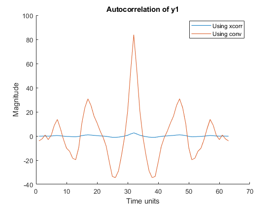
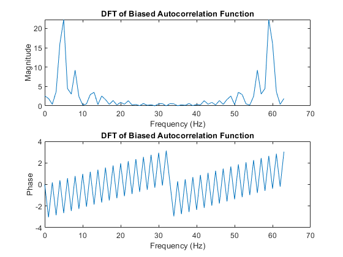
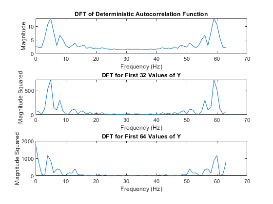
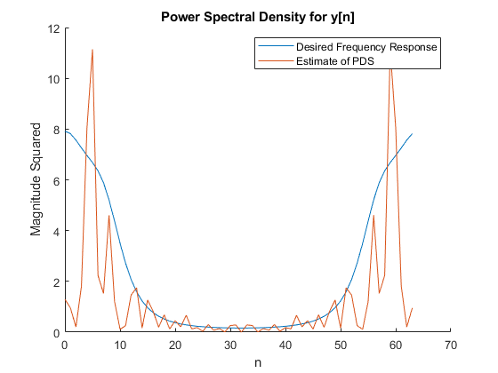
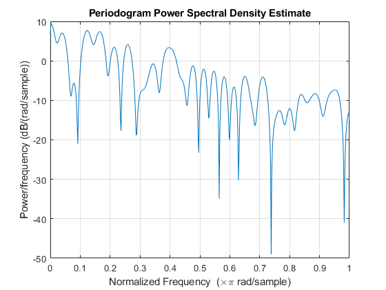
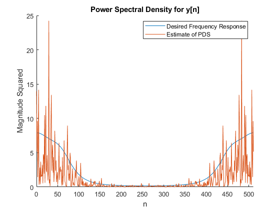
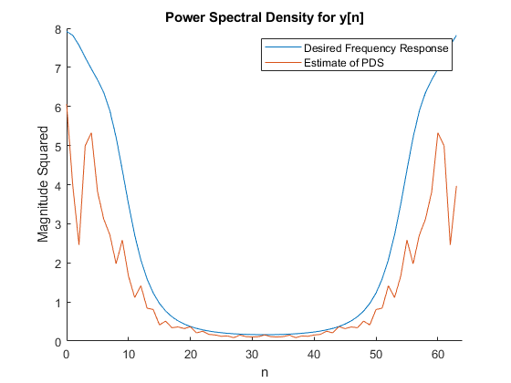
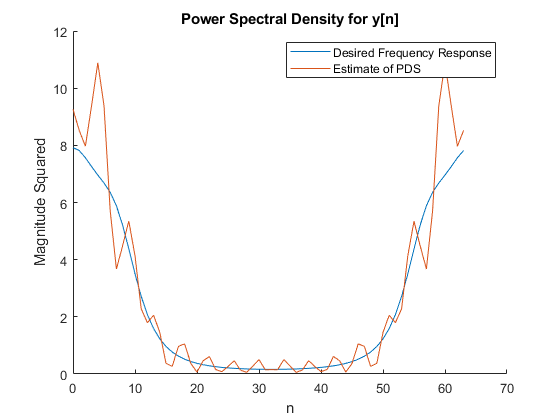
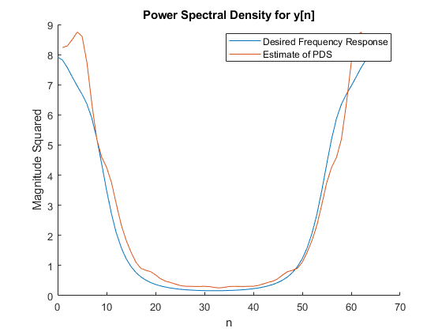

Contents
clear;
clc;
close all;
load pj2data;
Part A1
ySubset = y(1:32);
yCorrelation = xcorr(ySubset, ySubset, 'biased');
ySubsetFlip = fliplr(ySubset);
yConv = conv(ySubset, ySubsetFlip);
figure(1);
hold on;
plot(yCorrelation);
plot(yConv);
legend("Using xcorr", "Using conv")
title("Autocorrelation of y1");
xlabel("Time units")
ylabel("Magnitude")

Part A2
yCorrDFT = fft(yCorrelation, 64);
figure(2);
subplot(2,1,1);
plot(0:length(yCorrDFT)-1, abs(yCorrDFT));
title("DFT of Biased Autocorrelation Function");
xlabel("Frequency (Hz)")
ylabel("Magnitude");
subplot(2,1,2)
plot(0:length(yCorrDFT)-1, angle(yCorrDFT));
title("DFT of Biased Autocorrelation Function");
xlabel("Frequency (Hz)")
ylabel("Phase");
phi = zeros(1, 32);
for i = 1:32
phi(1, i) = 1/32 * sum(ySubset(i:32).*ySubset(1:32-i+1));
end

Part A3
phiDFT = fft(phi, 64);
figure(3);
subplot(3,1,1);
plot(0:length(phiDFT)-1, abs(phiDFT));
title("DFT of Deterministic Autocorrelation Function");
xlabel("Frequency (Hz)");
ylabel("Magnitude");
ySubsetDFT = fft(ySubset,64);
subplot(3,1,2);
plot(0:length(ySubsetDFT)-1, abs(ySubsetDFT).^2);
title("DFT for First 32 Values of Y");
xlabel("Frequency (Hz)");
ylabel("Magnitude Squared");
ySubset64 = y(1:64);
ySubset64DFT = fft(ySubset64,64);
subplot(3,1,3);
plot(0:length(ySubset64DFT)-1, abs(ySubset64DFT).^2);
title("DFT for First 64 Values of Y");
xlabel("Frequency (Hz)");
ylabel("Magnitude Squared");

Part B1
length = 64;
freqResponse = downsample(Hejw2, 8);
figure(4);
hold on;
plot(0:length-1, freqResponse);
plot(0:length-1, abs(ySubsetDFT).^2/64);
hold off;
title("Power Spectral Density for y[n]");
xlabel("n");
ylabel("Magnitude Squared");
legend('Desired Frequency Response','Estimate of PDS');
error1 = (sum((freqResponse - abs(ySubsetDFT).^2/64).^2))/64;
disp("Error with 32 points: " + error1);
Error with 32 points: 7.5039

Part B2
length2 = 512;
figure(5);
ySub = y(1:64);
window = rectwin(64);
periodogram(ySub, window, 1024);
EstPDS = abs(fft(y,1024)).^2;
EstPDS = downsample(EstPDS, 2)/1024;
figure(6);
hold on;
plot(0:length2-1, Hejw2);
plot(0:length2-1, EstPDS);
hold off;
title("Power Spectral Density for y[n]");
xlabel( "n" );
ylabel( "Magnitude Squared" );
legend('Desired Frequency Response','Estimate of PDS');
xlim([0 length2-1])
error2 = sum((Hejw2 - EstPDS).^2 ) / 512;
disp( "Error with 512 points: " + error2);
Error with 512 points: 7.5488
 
Part B3
yNew = zeros(1, 64);
for i = 1:16
y1 = (i-1)*32 + 1;
yNewB = y(y1: y1 + 31);
yNew = yNew + abs(fft(yNewB, 64)).^2;
end
yNew = yNew / 1024;
Hejw2_64 = downsample(Hejw2,8);
figure(7);
hold on;
plot(0:length-1, Hejw2_64);
plot(0:length-1, yNew);
hold off;
title("Power Spectral Density for y[n]");
xlabel( "n" );
ylabel( "Magnitude Squared" );
legend('Desired Frequency Response','Estimate of PDS');
xlim([0 64]);
error3 = sum((Hejw2_64 - yNew).^2 ) / 64;
disp("Error using periodogram averaging: " + error3);
Error using periodogram averaging: 3.1403

Part B4
yBlackman = xcorr(y, y, 'unbiased');
yBlackman = yBlackman(497: 527);
figure(8);
hold on;
plot(0:length-1, freqResponse);
plot(0:length-1, abs(fft(yBlackman,64)));
hold off;
title("Power Spectral Density for y[n]");
xlabel("n");
ylabel("Magnitude Squared");
legend('Desired Frequency Response','Estimate of PDS');
error4 = sum((freqResponse - abs(fft(yBlackman,64))).^2)/64;
disp("Error using Indirect Blackman-Tukey: " + error4);
Error using Indirect Blackman-Tukey: 1.1899

Part B5
yTukey = abs(fft(triang(31)'.* yBlackman,64));
figure(9);
hold on;
plot(0:length-1, freqResponse);
plot (yTukey);
hold off;
title("Power Spectral Density for y[n]");
xlabel("n");
ylabel("Magnitude Squared");
legend('Desired Frequency Response','Estimate of PDS');
error5 = sum((freqResponse-yTukey).^2)/64;
disp( "Error with new estimation: " + error5);
errors = [error1, error2, error3, error4, error5];
Errors = table(errors);
Error with new estimation: 0.27679
